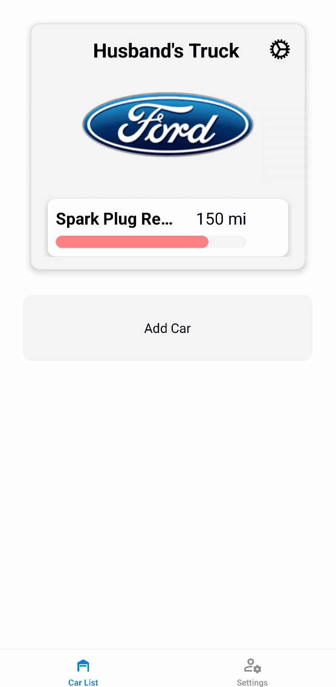
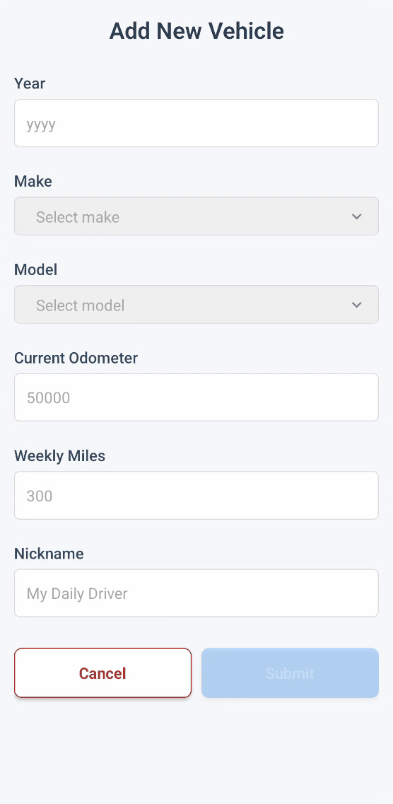

Getting Started
Check out this quick preview of what Automated Auto Care can do for you.


Car List Page
View all vehicles you've added to your account. Quickly jump between cars to manage their maintenance tasks or update details.

Add a New Car
Easily add a vehicle by entering the make, model, year, and mileage. AAC uses this info to generate your personalized maintenance schedule.

Maintenance List
See all upcoming and completed maintenance tasks for your car. Mark tasks as complete, get reminders, and stay on top of your vehicle’s health.